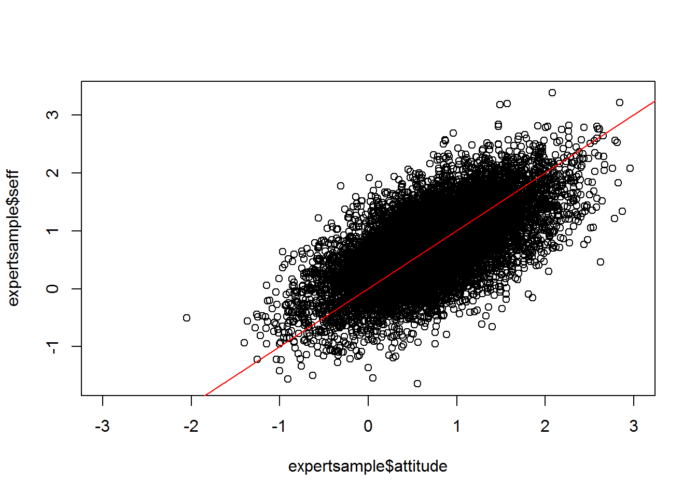
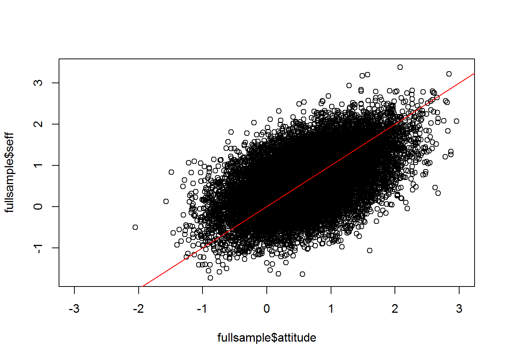

Determining determinant importance
Matti Heino
The task
Gjalt-Jorn Peters gives us the following example:
[…] Image we’re developing an intervention to promote the use of hearing protection, specifically earplugs, in Dutch nightlife settings. Further, imagine that earplugs are generally quite uncomfortable; diminish the experience of the music somewhat; are easy to carry; and don’t hinder conversation. People who have experience with using earplugs are aware of this, but people who don’t use earplugs have their own ideas which may be sensible but are often not.
An intervention developer does a determinant study and in the questionnaire measures the following two attitudinal beliefs:
- “When I use earplugs, I experience an uncomfortable feeling in my ears.”
- “When I use earplugs, my experience of the music is diminished.”
And the following two self-efficacy beliefs:
- “Earplugs are easy to carry.”
- “Earplugs hinder conversation.” (reverse coded)
The simulation
Let’s formalise this by simulating two samples of participants. The first has people who have experience with earplugs, i.e. “experts”: This is created by forcing a correlation of 0.8 between two attitude items and two self-efficacy items. In addition, all attitude items correlate 0.5 with the outcome, and all self-efficacy items correlate 0.7 with the outcome. Everything else is correlated on a 0.1 level.
The other sample has no experts; it’s identical to the previous one except for the 0.8 correlations. We also combine these two samples into a third sample.
# Create a correlation matrix for mvrnorm:
experts <- matrix(
c(1, 0.8, 0.1, 0.1, 0.8, 0.8, 0.1, 0.1, 0.5,
0.8, 1, 0.1, 0.1, 0.8, 0.8, 0.1, 0.1, 0.5,
0.1, 0.1, 1, 0.1, 0.1, 0.1, 0.1, 0.1, 0.5,
0.1, 0.1, 0.1, 1, 0.1, 0.1, 0.1, 0.1, 0.5,
0.8, 0.8, 0.1, 0.1, 1, 0.8, 0.1, 0.1, 0.7,
0.8, 0.8, 0.1, 0.1, 0.8, 1, 0.1, 0.1, 0.7,
0.1, 0.1, 0.1, 0.1, 0.1, 0.1, 1, 0.1, 0.7,
0.1, 0.1, 0.1, 0.1, 0.1, 0.1, 0.1, 1, 0.7,
0.5, 0.5, 0.5, 0.5, 0.7, 0.7, 0.7, 0.7, 1),
nrow = 9, ncol = 9, byrow = TRUE)
dimnames(experts) = list(
c('A1uncomfy', 'A2poorMusic', 'A3', 'A4', 'SE1easiness', 'SE2conversation', 'SE3', 'SE4', 'outcome'),
c('A1uncomfy', 'A2poorMusic', 'A3', 'A4', 'SE1easiness', 'SE2conversation', 'SE3', 'SE4', 'outcome'))
# Simulate the expert sample:
expertsample <- mvrnorm(10000,
c(1, 1, 0.5, 0.5, 1, 1, 0.5, 0.5, 0.5),
experts, tol = 1)
noexperts <- matrix(
c(1, 0.1, 0.1, 0.1, 0.1, 0.1, 0.1, 0.1, 0.5,
0.1, 1, 0.1, 0.1, 0.1, 0.1, 0.1, 0.1, 0.5,
0.1, 0.1, 1, 0.1, 0.1, 0.1, 0.1, 0.1, 0.5,
0.1, 0.1, 0.1, 1, 0.1, 0.1, 0.1, 0.1, 0.5,
0.1, 0.1, 0.1, 0.1, 1, 0.1, 0.1, 0.1, 0.7,
0.1, 0.1, 0.1, 0.1, 0.1, 1, 0.1, 0.1, 0.7,
0.1, 0.1, 0.1, 0.1, 0.1, 0.1, 1, 0.1, 0.7,
0.1, 0.1, 0.1, 0.1, 0.1, 0.1, 0.1, 1, 0.7,
0.5, 0.5, 0.5, 0.5, 0.7, 0.7, 0.7, 0.7, 1),
nrow = 9, ncol = 9, byrow = TRUE)
dimnames(noexperts) <- list(
c('A1uncomfy', 'A2poorMusic', 'A3', 'A4', 'SE1easiness', 'SE2conversation', 'SE3', 'SE4', 'outcome'),
c('A1uncomfy', 'A2poorMusic', 'A3', 'A4', 'SE1easiness', 'SE2conversation', 'SE3', 'SE4', 'outcome'))
# Simulate the non-expert sample:
noexpertsample <- mvrnorm(10000, rep(0.5, 9), noexperts, tol = 1)
# Combine samples:
fullsample <- bind_rows(data.frame(expertsample), data.frame(noexpertsample))We aggregate the individual items to produce aggreate sumscore scales.
scales <- list(
attitude = c('A1uncomfy', 'A2poorMusic', 'A3', 'A4'),
seff = c('SE1easiness', 'SE2conversation', 'SE3', 'SE4'),
indattitude = c('A3', 'A4'),
indseff = c('SE3', 'SE4')
)
fullsample <- makeScales(data.frame(fullsample), scales) %>% data.frame
expertsample <- makeScales(data.frame(expertsample), scales) %>% data.frame
noexpertsample <- makeScales(data.frame(noexpertsample), scales) %>% data.frameLet’s see how we did.
Correlations
Here’s the correlation matrix for the sample that includes experts, as well as a scatterplot of attitude on the x-axis and self-efficacy on the y-axis:
expertsample %>% dplyr::select(attitude, seff, outcome) %>% cor() %>% round(3)## attitude seff outcome
## attitude 1.000 0.664 0.706
## seff 0.664 1.000 0.907
## outcome 0.706 0.907 1.000plot(expertsample$attitude, expertsample$seff, xlim = c(-3, 3))
lines(x = c(-10, 10), y = c(-10, 10), col = "red")
This is for the sample that didn’t include experts:
noexpertsample %>% dplyr::select(attitude, seff, outcome) %>% cor() %>% round(3)## attitude seff outcome
## attitude 1.000 0.342 0.692
## seff 0.342 1.000 0.915
## outcome 0.692 0.915 1.000plot(noexpertsample$attitude, noexpertsample$seff, xlim = c(-3, 3))
lines(x = c(-10, 10), y = c(-10, 10), col = "red")
And here’s the combined sample:
fullsample %>% dplyr::select(attitude, seff, outcome) %>% cor() %>% round(3)## attitude seff outcome
## attitude 1.000 0.536 0.683
## seff 0.536 1.000 0.891
## outcome 0.683 0.891 1.000plot(fullsample$attitude, fullsample$seff, xlim = c(-3, 3))
lines(x = c(-10, 10), y = c(-10, 10), col = "red")
Regressions
Now, let’s see what regression analysis gives us. The coefficients are standardised for comparability.
Here’s the expert sample:
m.expert <- lm(scale(outcome) ~ scale(attitude) + scale(seff), data = expertsample)
m.expert$coefficients %>% round(3)## (Intercept) scale(attitude) scale(seff)
## 0.000 0.187 0.783And the sample with no experts:
m.noexpert <- lm(scale(outcome) ~ scale(attitude) + scale(seff), data = noexpertsample)
m.noexpert$coefficients %>% round(3)## (Intercept) scale(attitude) scale(seff)
## 0.000 0.430 0.768… And finally, the full sample:
m.full <- lm(scale(outcome) ~ scale(attitude) + scale(seff), data = fullsample)
m.full$coefficients %>% round(3)## (Intercept) scale(attitude) scale(seff)
## 0.000 0.287 0.737Conclusion
What have we learned? The importance of attitude you’d infer from regression analysis is lower than if you had merely looked at bivariate correlations. But both analyses agree you should be targeting self-efficacy, if you only had to choose one.